Created on: 10/27/2014, Last modified: 10/27/2014. Copyright © X.C.
About
A web framework, and Forum/BBS web application. It is light-weighted, easy to deploy and extend.
It displays well in both desktop computer and mobile phones.
Features include:
- Provide a web framework for sign up, sign in/out, user profile management.
- Provide a forum/bbs.
- Allow fine control of permissions of board and articles.
- Provide an internal mailbox.
- Allow sending external emails and internal emails.
- Interface works well on desktop, ipad, and mobile devices.
- Allow creation of new themes, mostly by changing files in /theme and /css.
- Allow customizable settings, in /conf/conf.php.
- Allow English or Chinese version. Easy to extend to other languages.
History
Development first initiated in Summer 2013 as a forum for homecox.com.
It stopped for a while, and was picked up again in Summer 2014.
License
Released under Apache/MIT/BSD/GPLv2 license.
User Documentation
U.1 The homepage.
The default installation contains five boards: Computer Science, Programming World,
News, Just for fun, Forum Administration.
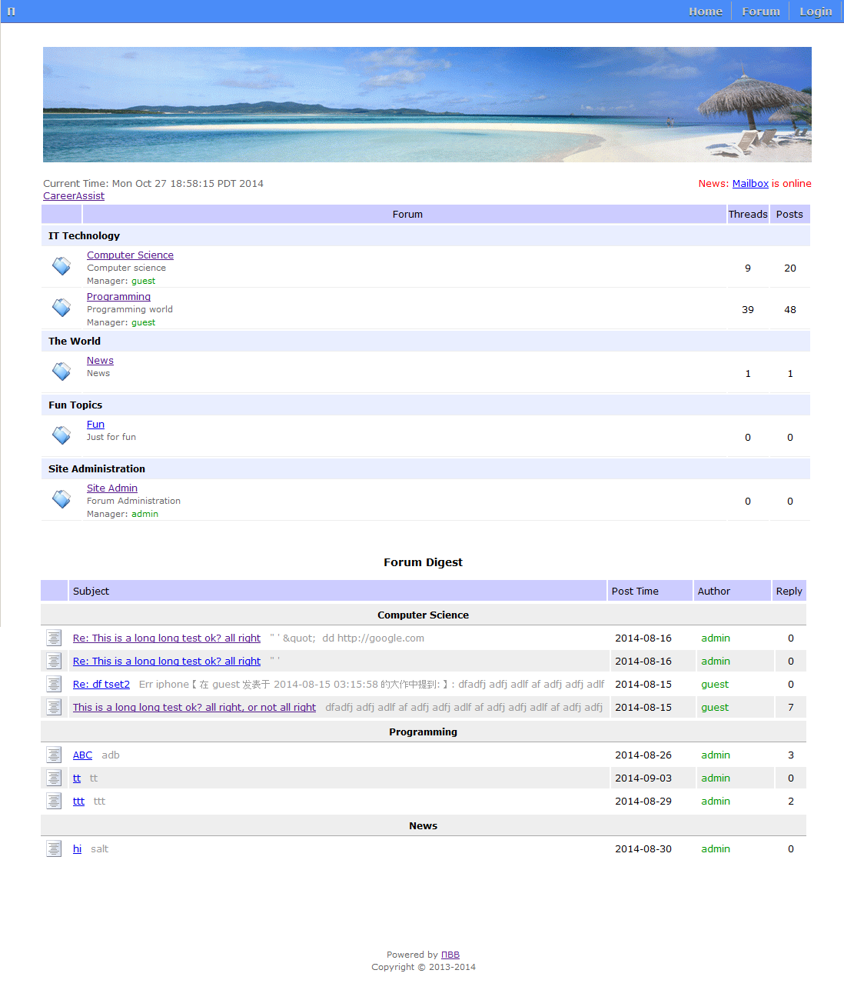
U.2 Interface of a board
This is the "Forum" view of a board. The "Digests" view shows articles labeled as digests, which
will show in the homepage digest list. The "Marks" view shows articles marked as important.
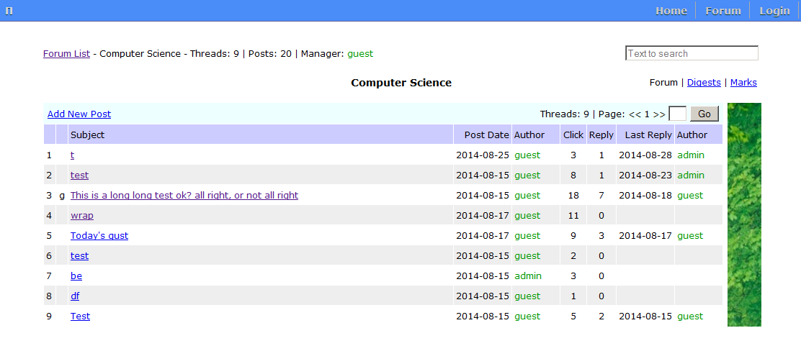
U.3 Post special tags
Post allows only plain text initially. Then special tags are added to make posts more informative. These include:
- To show a hyperlink:
@[a href="{your link}"] {text} @[/a]
- To show an image:
@[img src="{image link}"]
You can also specify the display size:
@[img src="{image link}" width="400" height="200"]
- To show a video (Youtube, Youku etc.):
E.g., the original link is <iframe width="560" height="315" src=".." .. allowfullscreen></iframe>
Change to: @[iframe width="560" height="315" src=".." .. allowfullscreen]
- To show a segment of code:
@[code] {your code} @[/code]
- To show a segment of code is a textarea with adjustable height:
@[codearea rows=n] {your code} @[/codearea]
- To show bold text:
@[b] {text} @[/b]
- To show underlined text:
@[u] {text} @[/u]
For example, this post contains a video, two images, an underlined line and a line in bold text.
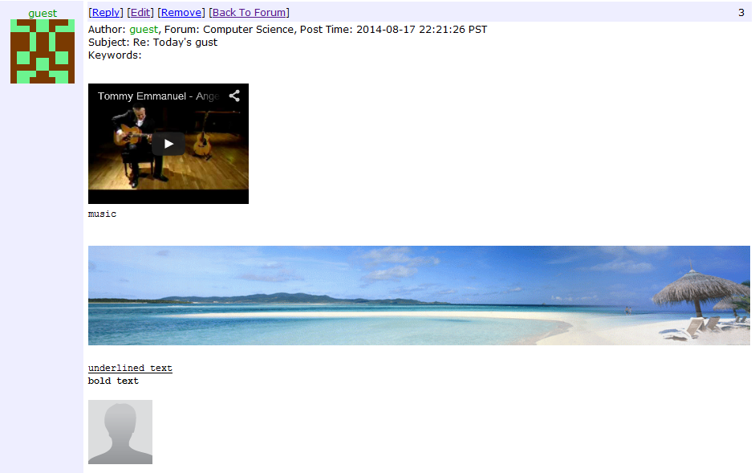
Note that these tags used by BBS are also used identically by I-Mail.
U.4 Register An Account
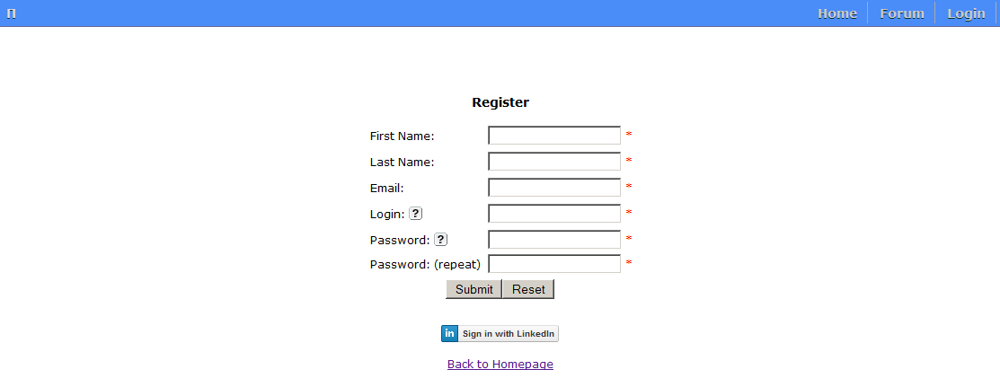
U.5 Sign in
There are 2 choices: 1) regular sign in, 2) Linkedin sign in.
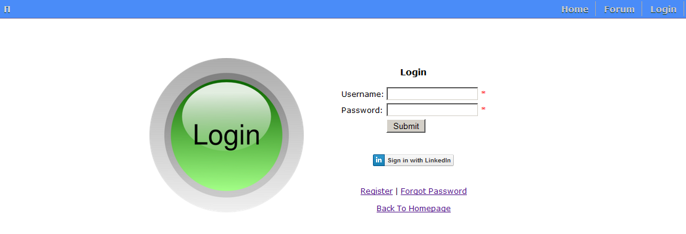
U.6 User menu and Profile after sign in
Figure below shows the user menu, and the basic profile page.
Note only those users who are board managers can see the "Manage Boards" entry.
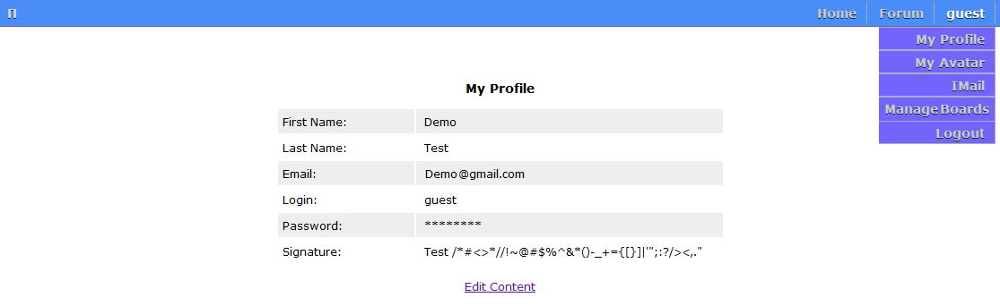
U.7 User Avatar
The user avatar uses universal icon from gravatar.com.
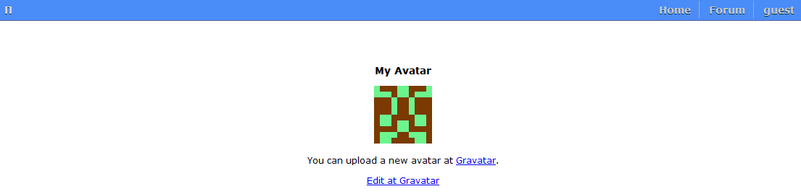
U.8 Internal Mail: I-Mail
There is a internal mailbox (I-Mail) users can use for private communication with other registered users.
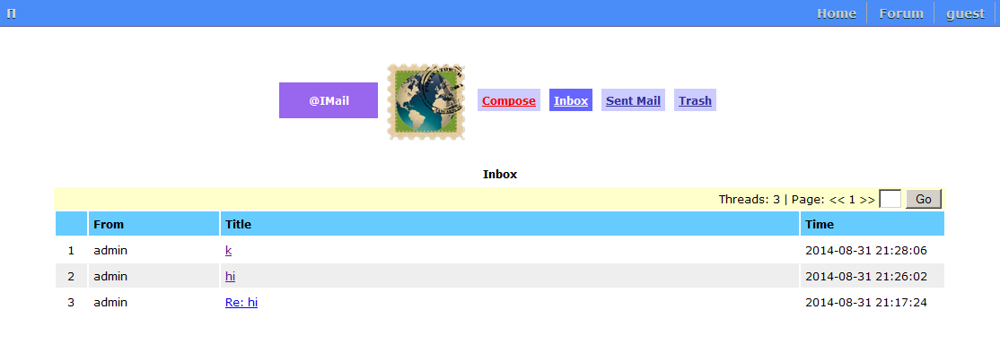
U.9 Compose I-Mail
This shows the interface to compose an internal mail. The user can send group I-Mail to multiple users.
Attachment is allowed.
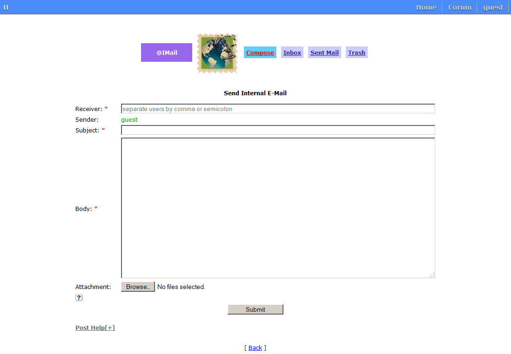
U.10 User List
Under the "Forum" menu there is a "User List" submenu. Click on this shows a list of registered users.
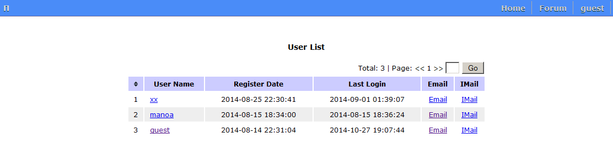
U.11 External Mail: E-Mail
From the user list one can send an external email to another registered user. The user's registration email is used.
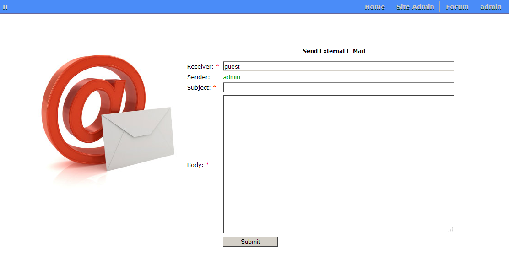
Board Master Documentation
Some users are appointed as board masters by system administrator.
A board master manages users and article permissions in a board.
The possible options on the management of a post are:
- Top - a top post is shown at the beginning of a board, with an upward arrow.
- Readonly - a readonly post cannot be editted or deleted by its author.
- Mark - a post labeled as "Mark" when it is of value, and will show in the "Marks" view of the board.
- Digest - a post labeled as "Digest" when it is of value to be known by general forum visitors, and
will show in the "Digests" view of the board.
- Hide - a hidden post is not shown on the board view.
- Delete - a deleted post is gone.
B.1 Manage Board Permission
Under the user profile menu there is a "Manage Boards" submenu. Click on this shows the page to manage board permissions.
A board can be Private, Hidden, and/or Readonly.
The rules are:
- Only board members can post in a Private board.
- A Hidden board can be seen only by logged in board members.
- No one can post in a Readonly board.
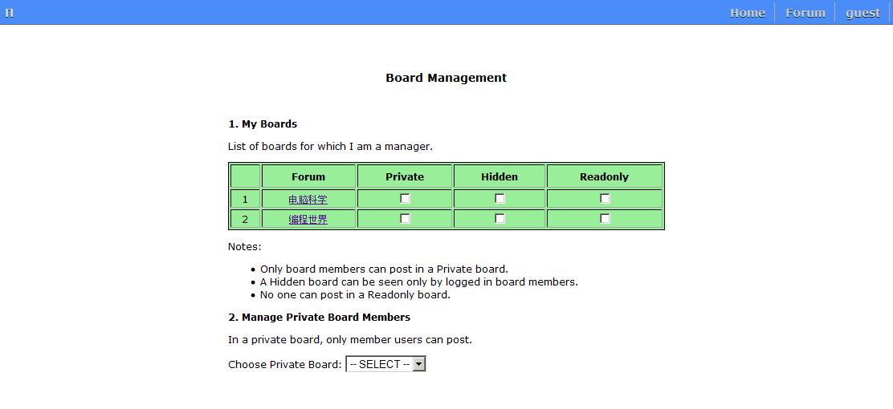
B.2 Manage Private Board Members
If a board is private, only approved members can post in this board.
The board master can add or remove a member to/from the board's members.
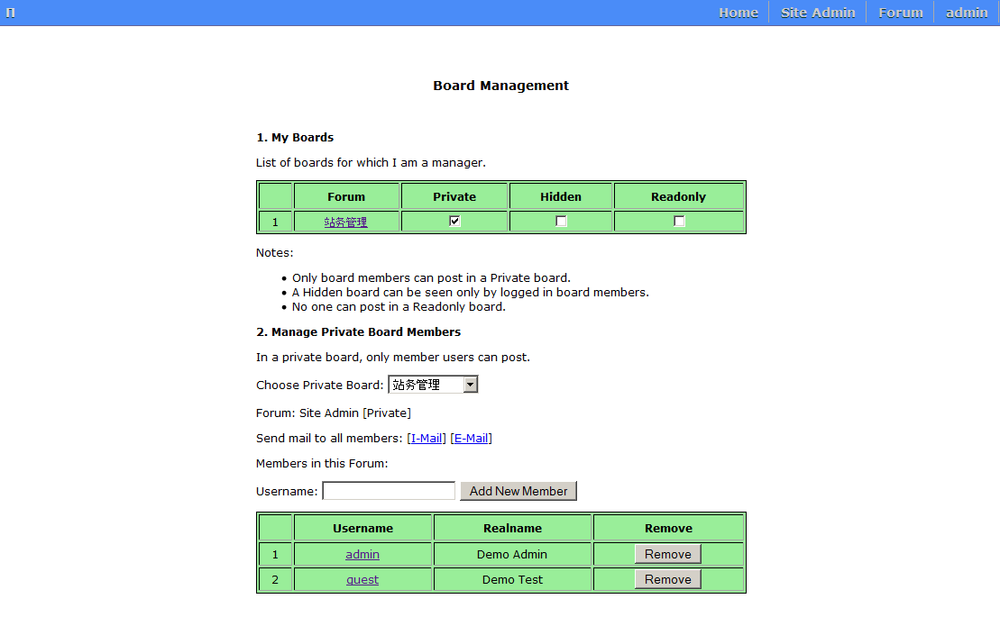
B.3 Manage Posts
The board master can manage posts on the board. A board master will see the "Turn On Manage Mode" link below.
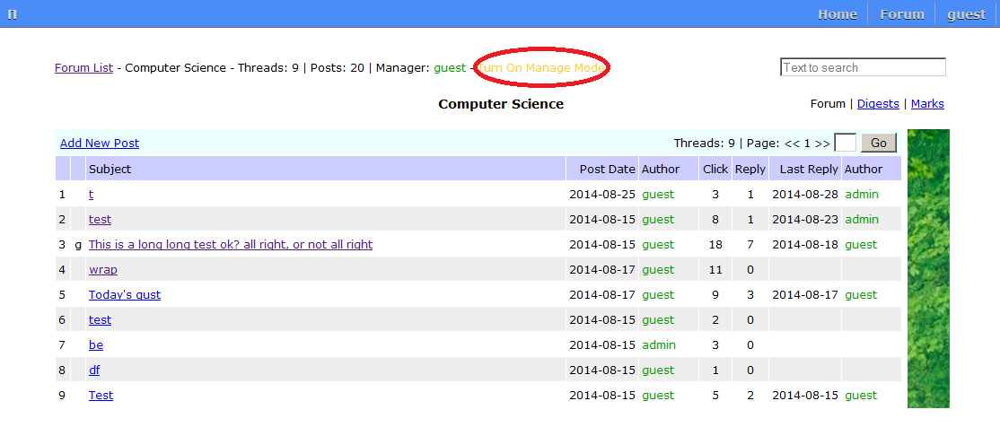
Turn On Manage Mode, the board master sees the below options:
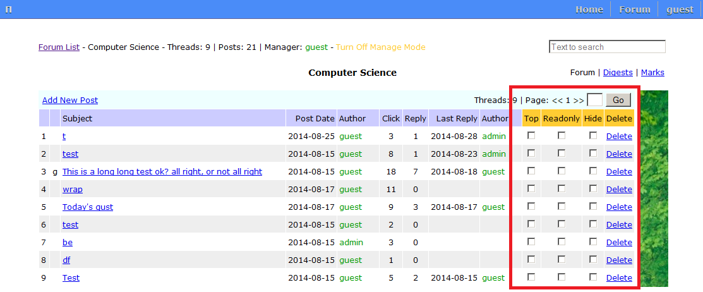
Click into the post, the board master sees the below options to manage each post individually:
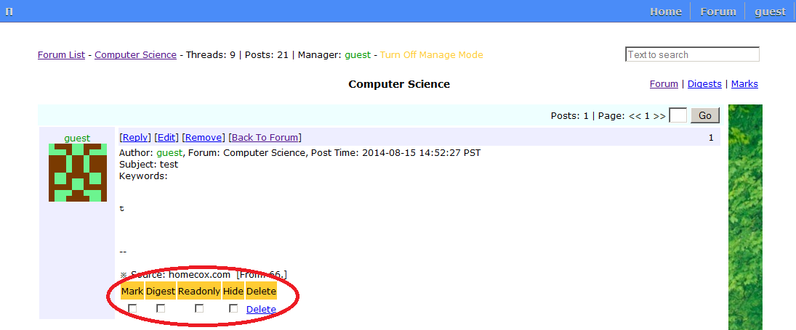
System Administrator Documentation
The system administrator manages all the users, boards and posts in the forum.
The system administrator by default has all the permissions of a board master.
S.1 System admin interface
The figure below shows current functions a system administrator has access to.
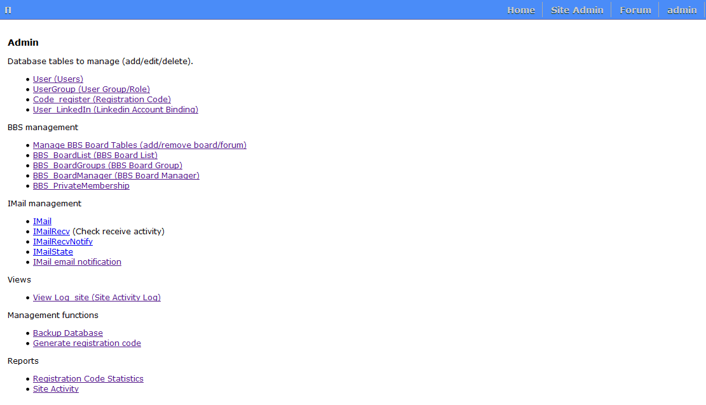
S.2 Manage users
Links involved are:
- User - manage users, including add/update/delete
- UserGroup - manage user group. Two basic groups are: admin, user.
- Code register - used only when the registration code feature is used.
When the registration code feature is enabled, only invited people with a registration code can register.
- User_LinkedIn - manage linkedin binding of users who sign in using their linked in account.
S.2 BBS Management
Links involved are:
- Manage BBS Board Tables (add/remove board/forum). This allows to create/edit new board. See S.2.2.
- BBS_BoardList (BBS Board List). This lists all the boards.
- BBS_BoardGroups (BBS Board Group). This allows to manage board groups. See S.2.1.
- BBS_BoardManager (BBS Board Manager). The allows to manage board managers. See S.2.2.
- BBS_PrivateMembership. This lists the members in each private board.
S.2.1 Manage BBS Board Tables.
A board belongs to a group. Use the "BBS BoardGroups (BBS Board Group)" link to manage groups,
including add/udpate/delete.
S.2.2 Manage boards
The "Manage BBS Board Tables (add/remove board/forum)" page allows a new board to be created.
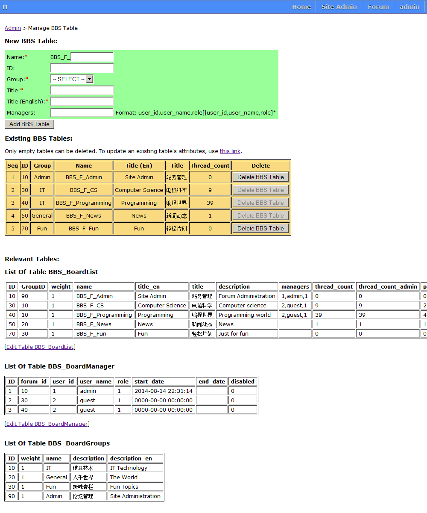
A new board can be added here.
A board can have 0, 1 or more than 1 managers. Two places are relevant: table BBS_BoardManager and
table column BBS_BoardList.managers.
In table 'BBS_BoardList', the 'managers' column format is:
user_id,user_name,role[|user_id,user_name,role]*
S.3 IMail Management
Links involved are:
- IMail - mail information (read only).
- IMailRecv (Check receive activity) - view receive status (read only).
- IMailRecvNotify - view mail notification information (read only).
- IMailState - constants for mail state (read only).
- IMail email notification - this can send mail notification immediately.
This can be set up such that it is done by crontab job automatically periodically.
S.4 Views
Links involved are:
- View_Log_site (Site Activity Log) - shows site activity log (read only).
S.5 Management functions
Links involved are:
- Backup Database - see S.5.1.
- Generate registration code - used only when the registration code feature is on.
S.5.1 Backup Database
The allow backup site database from web interface.
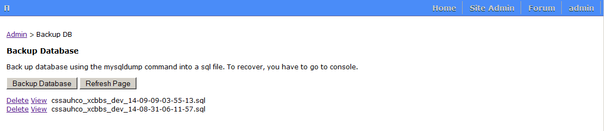
S.6 Reports
Links involved are:
- Registration Code Statistics - used only when the registration code feature is on.
- Site Activity - show site activites (read only).
S.7 configuration file
Under the forum directory there is a /conf folder, which contains these configuration files:
- conf.php
- linkedin_conf.php
- upload_conf.php
S.7.1 conf.php
This allows many settings, for example:
- Site debug mode (if true, show more details in error/warning information)
- Database config file location.
- Language. Currently support Chinese and English.
- Captcha. Use or not. Length of Captch string.
- Registration code. Use or not.
- User account email activation. Use or not.
- Email. Actually send email or not.
- Site name, and site master email.
- Time zone.
- BBS settings. Various.
- Gravatar. Use or not.
- IMail settings. Various.
S.7.2 linkedin_conf.php
This file contains linkedin parameters:
- API_KEY
- API_SECRET
- REDIRECT_URL
- SCOPE
S.7.3 upload_conf.php
This file contains upload parameters:
- Max file size.
- Allow file extensions.
- Upload file root.
Developer Documentation
This is a light-weighted, easy to deploy, use and modify website framework.
This section talks about several important aspects if one wants to develop based on this framework.
D.1 Database development
To work on the database, one just needs to include either /func/db.php or /func/db_mysqli.php.
These two files implement exactly the same set if API functions.
/func/db.php uses the mysql connection system calls, which is deprecated by MySQL since 2012.
/func/db_mysqli.php uses the mysqli connection system calls and is preferred.
The API functions:
Other related functions:
- db_htmlEncode($s)
To display html/xml open/close tags and other special characters from database in browsers correctly.
- db_encode($s)
To encode a query to database, avoid special characters or sql injection.
D.2 Other library functions
Other library function files also reside in /func/ directory:
- ClsPage.php, ClsPage.js
A class for paging of a long list.
- Cls_DBTable.php
A class for manipulating a database table.
This class will read from database schema and automatically build the view/edit/verify forms.
- Cls_DBTable_Custom.php
A class for manipulating a database table.
This class will read from database schema and automatically build the view/edit/verify forms.
Customized from Cls_DBTable with this change:
1) Instead of providing a list of hidden fields, provide a list of given fields and titles.
2) Added styles for TB, TR, TD.
3) Added en/cn languages for buttons.
This is convenient when you want to use custom field titles, and in different languages.
- avatar.php
Use avatar from gravatar.com
- captcha.php
Function to create and use a captcha image made of English letters and digits.
- captcha_cn.php
Function to create and use a captcha image made of Chinese characters.
- email.php
Email functions.
- mobile.php
Decide if the browser client is on mobile device.
- util.php
Various utility functions, such as:
- Getting GET/POST/REQUEST parameters.
- String functions: startsWith( $haystack, $needle ), endsWith( $haystack, $needle ), str_truncate($s, $maxlen).
- Get random string: getRandStr($len, $type=1)
- Convert array to/from selection list.
- util_fs.php
File system utility functions. Such as:
- create/delete directory/file
- decide if a directory is empty
- return files under a directory
D.3 Authentication
To use the authentication mechanism of this framework is very easy,
just include certain authentication check files under directory /func.
- /func/auth.php
Check if a user has signed in.
Synopsis:
<?php
session_start();
require_once("../func/auth.php");
?>
- /func/auth_board_manager.php
Check if a signed in user is a board master.
Synopsis:
<?php
session_start();
require_once("../func/auth.php");
require_once("../func/auth_board_manager.php");
?>
- /func/auth_admin.php
Check if a signed in user is a system administrator.
Synopsis:
<?php
session_start();
require_once("../func/auth.php");
require_once("../func/auth_admin.php");
?>
D.4 Themes
This framework allows a central place to create and use new themes in the /theme and /css directory.
The /theme folder contains these files:
- header.php, footer.php
To be included in any other web interface files, for a consistent look.
- themes.php
This is where a theme is defined and used.
Based on the theme name, different css files from /css folder is used.
Here you can define page title, keywords, description, forum's top row banner image and other elements.
- share.php
Include this to display the social media share icons from jiathis.com.
This file is included in footer.php by default. You can include it in other places too.
The /css folder contains css files for different themes.
- Right now there are 2 themes: 1) plain and 2) blue. "blue" is the default theme.
To create a new theme, you need to:
- Change /theme/themes.php, for forum's top row banner image and other elements
- In /css, create a new sub-directory, with these css files:
a) digest.css (for bbs digest),
b) menu.css (for menu), bbs.css,
c) bbs_mobile.css (for bbs, both desktop and mobile versions),
d) site.css, site_mobile.css (for entire site, both desktop and mobile versions).
D.5 File Upload
There are currently two places that upload is used: 1) BBS, 2) I-Mail.
Currently file upload works this way:
- A file is first uploaded to a temprary folder,
then copied to final folder when the user submit the BBS post or I-Mail.
- The temp folder is in /upload/[function]/tmp, and final folder is in /upload/[function]/fin.
- Under the /tmp or /fin directory, user's username is used as storage folder.
Security:
- For security purpose, an uploaded file's url cannot be easily guessed.
- For this, a salt,
which is a random string of length ~10 is generated for each BBS post or email, and used
as the part of the the storage folder name.
- This way it's very hard to guess the url of the uploaded file.
To create a new upload function, one needs to:
- Add corresponding storage folders in /upload
- Include files file_upload.php, attachment_func.php as in /bbs and /imail, and make corresponding changes.
- BBS and I-Mail's upload functions can be used as examples to understand how to implement a new upload function.
D.6 Miscellaneous
D.6.1 Google Analytics
You can include your analytics code in /js/analytics.php, which is included in theme/footer.php by default.
D.6.2 Social media promotion icons
The jiathis.com icon panel is used. The code is in /theme/share.php and included in theme/footer.php by default.
To-do List
IMail
- email notification on imail (done. also set up cron job for this)
- admin send mail to all members
- draft
- upload progress by javascript
- cc, bcc
- receipt notification to sender
EMail
- group mail (done)
- attachment
Wiki post
- wiki post: everyone can edit.
More of user profile
- In addition to current basic profile, provide a page to get more user details.
BBS post tag buttons
- So user no need to type tags manually
- email notification of response
- email notification of new post
Author
X. Chen
Copyright © 2013-2014
Contact:
Email |
Download
{kind=link}
{kind=link}
{kind=link}
{kind=link}
{kind=link}
{kind=link}
{kind=link}
{kind=link}
{kind=link}
{kind=link}
{kind=link}
{kind=link}
{kind=link}
{kind=link}
{kind=link}
{kind=link}
{kind=link}
{kind=link}
{kind=link}